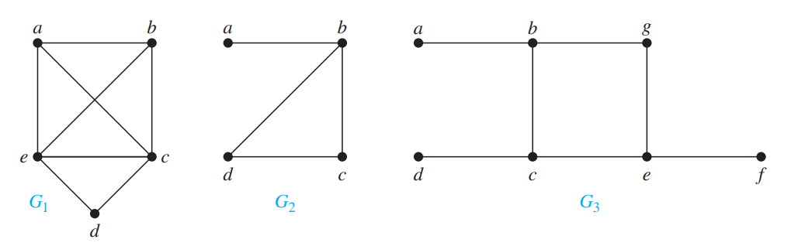

Hamiltonian Path and Cycle:
The Hamiltonian path problem
is a topic discussed in the fields of complexity theory
and graph theory. It decides if a directed or undirected graph, G,
contains a Hamiltonian path, a path that visits every vertex in the graph exactly once.
The Hamiltonian cycle problem
is similar to the Hamiltonian path problem, except it asks if a given
graph contains a Hamiltonian cycle.
Hamiltonian Path:
A simple path in a graph G that passes through every vertex
exactly once is called a Hamiltonian path. The simple path
x0, x1, ..., xn-1, xn
in the graph G = (V, E) is a Hamiltonian path if V =
{x0, x1, ..., xn-1, xn}
and xi ≠ xj for 0 <= i <= j <= n.
Hamiltonian Circuit:
A simple circuit in a graph G that passes through every vertex exactly once is called
a Hamiltonian circuit. The simple circuit
x0, x1, ..., xn-1, xn, x0
(with n > 0) is a Hamilton circuit if
x0, x1, ..., xn-1, xn
is a Hamiltonian Path.

Fig : G1 has a Hamiltonian
Circuit: a, b, c, d, e, a
G2 has a Hamiltonian
Path: a, b, c, d
G3 has neither.
Dirac's Theorem:
If G is a simple graph with n vertices with n >= 3 such that the
degree of every vertex in G is at least n/2, then G has a Hamilton circuit.
Ore's Theorem:
If G is a simple graph with n vertices with n >= 3 such that
deg(u) + deg(v) >= n for every pair of nonadjacent vertices u and v in G,
then G has a Hamilton circuit.